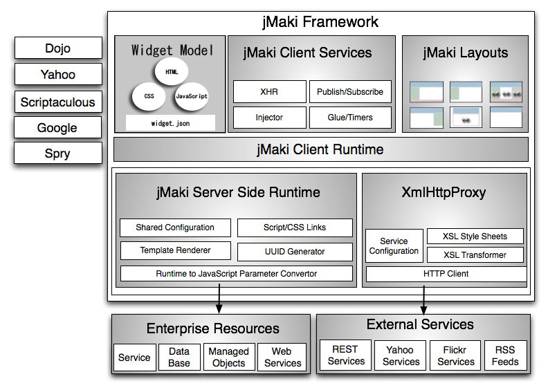
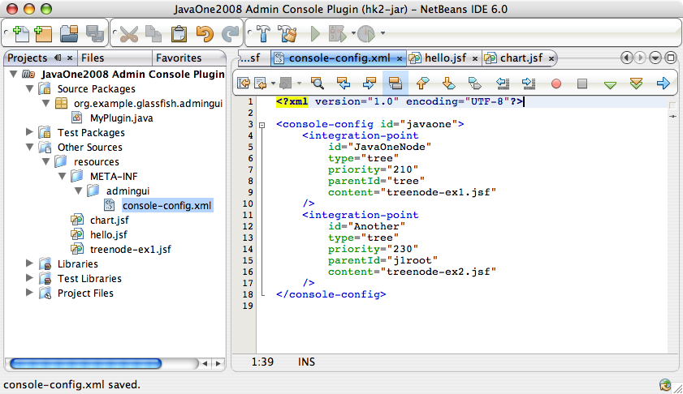

Exercise 2: Charting with jMaki
Introduction:
The goal of this exercise is to create a JSF page which utilizes the jMaki Charting component and link the page to the GlassFish Administration Console by adding another tree node in the GlassFish Administration Console. When you have completed this exercise, your plugin will resemble the following image:

In this exercise you will learn the following concepts:
- How to add jMaki widget to a JSF page.
- How to add a plugin to the Administration Console that
links to another plugin
IntegrationPoint.
To learn background information about jMaki, proceed to the next section. To begin creating the jMaki Charting JavaServer Faces page immediately, proceed to the Step-by-Step Instructions.
Background Information:
jMaki is a lightweight client/server framework for creating JavaScript centric Web 2.0 applications using CSS layouts, widgets widget model, client services such as publish / subscribe events to tie widgets together, JavaScript action handlers, and a generic proxy to interact with external RESTful web services. While jMaki abstracts much of the JavaScript and CSS by providing defaults for widgets, the JavaScript widgets and CSS are made easily accessible so they may be customized by a designer or page developer. jMaki focuses on the aspects of delivering JavaScript to the client allowing the JavaScript to communicate to various server-technologies including PHP, JavaServer Pages, JavaServer Faces, and Phobos in a server-technology neutral way.

Following are the client and the server modules that make up jMaki.
- jMaki Layouts: - jMaki Layouts provide a standards based starting point for creating your web applications using HTML and CSS. The CSS is in plain view so it can be easily customized for your needs.
- jMaki Client Runtime: - The jMaki Client Runtime is the JavaScript responsible for bootstrapping all widgets and passing parameters provided by a server-side runtime to the widgets. Parameters are unique to each widget, and the JavaScript runtime makes sure that each widget instance gets the correct parameters that were passed from the server-side runtime. In cases where parameters are not provided the runtime uses default parameters that may then be customized for each widget.
- jMaki Client Services:Services such convenient APIs for performing XMLHttpRequest and publish subscribe on the client are provided to all widgets as a means of communication. jMaki glue is built on top of publish/subscribe events. jMaki Glue is built on top of the publish/subscribe mechanism. It allows you to define application behavior and time widgets together widgets using JavaScript actions when a specific event is published to a topic. jMaki Timers allow JavaScript action handlers to be called or events to be published at a set interval. The jMaki Injector is a client service that allows you to bring in an external page into any given div element. The Injector transfers scripts and CSS to the global page content and allows widgets to be loaded much like an iframe without the usability issues.
- jMaki Widget Model - The jMaki widget model provides a component model for reusable JavaScript components. The structure is based on a HTML, JavaScript and CSS. You can use this structure to create your own widgets or wrap widgets from any given toolkit. jMaki provides default wrappers and a server tie-in for many commonly-used Dojo, Yahoo UI, Prototype, and some native widgets. jMaki also defines a widget.json format which is a common way of describing which so that they are accessible by tools.
- jMaki Server Runtime - The jMaki Server Runtime is responsible for tying the jMaki JavaScript Client Runtime to a server-side runtime such as Java, PHP, or the JavaScript-based Phobos runtime. The server runtime tracks and renders all script and CSS references based on library type being used making sure that the duplicate script and CSS links are not duplicated. The server-runtime also makes sure API keys (such as Google and Yahoo Map keys) are applied when necessary based on a configurable set of keys. The server runtime renders the HTML templates making and serializes data in JavaScript such that each widget instance is provided the proper data.
- XmlHttpProxy - The XmlHttpProxy module provides a means for widgets to access JSON or XML access RESTful XML-based services outside of the web application domain. Such services include RSS feeds, Yahoo services such as geocoding, Flickr image searches, and many more to come. The XmlHttpProxy allows widgets to access services in a uniform way by providing XSL-to-JSON transformations that can be easily customized.
{kind=link}
For more developer information on jMaki, visit: https://ajax.dev.java.net/developer.html.
jMaki charting is an extension of the jMaki project which provides dynamic charting capabilities where charts can be manipulated on the client without round trips to the server. Chart manipulation is handled through the jMaki publish and subscribe mechanism. jMaki provides a common API to the following JavaScript Charting packages, Plotkit, Dojo, Yahoo and Google. Developers can quickly represent their data using bar, line, or area charts.
You will get to experiment with jMaki Charting in this lab. If you would like more details on jMaki Charting, visit: https://jmaki-charting.dev.java.net.
Step-by-Step Instructions:
- To use the solution application instead of your own application (which you should have completed in Exercise #1), execute the following commands from a terminal window:
Warning! By copying the solution you will no longer see any work you completed in exercise #1. We recommend you complete exercise #1 instead.
mv gfplugin/myplugin gfplugin/myplugin.save cp -r gfplugin/solution/myplugin/ex1 gfplugin/myplugin
Overview:
In this exercise, you will complete the following:
- Create a jMaki Charting page
You will create a JSFTemplating JavaServer Faces pages that contains a jMaki Charting component
- Modify your console-config.xml
You will modify your configuration file to add a new
IntegrationPoint - Specify your Tree Node layout
In this step you will add the file "treenode-ex2.jsf" for specifying the new tree node that points to the jMaki Charting page
- Build and Install your GlassFish v3 plugin
In this step you will install and test your plugin.
Steps:
A. Create a jMaki Charting page
<sun:page>
<sun:html>
<sun:head title="chart" />
<sun:body>
<sun:form id="form">
<!-- Pie Chart -->
<sun:markup tag="div" style="width:380px; height: 310px;">
<jmaki:widget name="jmaki.charting.plotkit.pie"
args="{colorScheme:4}"
value="{
xAxis : {
title : 'Months',
labels : [
{label : 'January'},
{label : 'February'},
{label : 'March'},
{label : 'April'},
{label : 'May'},
{label : 'June'},
{label : 'July'},
{label : 'August'},
{label : 'September'},
{label : 'October'},
{label : 'November'},
{label : 'December'} ] },
data : [ {
label : 'Set 1',
values : [25, 45, 25, 45, 50, 25, 35, 25, 25, 20, 35, 45]
} ] }" />
</sun:markup>
<!-- Area Chart -->
<sun:markup tag="div" style="width: 500px; height: 280px;">
<jmaki:widget name="jmaki.charting.dojo.area"
value="{
xAxis : {
title : 'Months',
labels : [{ label : 'January'},
{ label : 'February'},
{ label : 'March'},
{ label : 'April'},
{ label : 'May'},
{ label : 'June'},
{ label : 'July'},
{ label : 'August'},
{ label : 'September'},
{ label : 'October'},
{ label : 'November'},
{ label : 'December'} ] },
yAxis : {
title : 'Temperature',
labels : [{ label : '0', value : 0},
{ label : '10s', value : 10},
{ label : '20s', value : 20},
{ label : '30s', value : 30},
{ label : '40s', value : 40},
{ label : '50s', value : 50} ] },
data : [{label : 'Gray Series', values : [65, 45, 15, 45, 50, 25, 3, 25, 35, 27, 35, 39] },
{label : 'Pink Series', values : [25, 45, 50, 5, 45, 35, 25, 35, 25, 29, 27, 25] },
{label : 'Blue Series', values : [45, 50, 25, 35, 2, 45, 45, 55, 45, 47, 31, 41] },
{label : 'Red Series', values : [20, 12, 4, 7, 5, 19, 35, 11, 20, 30, 15, 7] } ] }"/>
</sun:markup>
</sun:form>
</sun:body>
</sun:html>
</sun:page>
- Open your project in NetBeans
You should have
mypluginproject still open in NetBeans. If you have closed the project, follow these steps to open it again.- Launch NetBeans IDE 6.0.
- Open
mypluginmodule:- Choose Open Project from the File menu.
- Browse to gfplugin and select myplugin module.
- Press the Open Project button. Your NetBeans Projects tab should show:
 Figure 2-3: Open myplugin module.
Figure 2-3: Open myplugin module.
- Create a jMaki Charting page
- Select "Other Sources" and then "Resources".
- Create an empty file named "chart.jsf".
- Use Figure 2.2 for the content of chart.jsf.
 Figure 2-4: Edit chart.jsf.
Figure 2-4: Edit chart.jsf.
B. Modify your console-config.xml
You now need to add an IntegrationPoint for plugging the
Exercise 2 tree node into the Administration Console. Each plugin module
should have 1 console-config.xml, and you can specify as
many IntegrationPoints as needed in this configuration file.
Since you already created this file in Exercise #1, all you need to do is
edit it and add the second IntegrationPoint. The Exercise 2
tree node should be under the J1 TreeNode, so you must specify the
parentId to be "j1root". You can refer to
Figure 2-5 to see this.
<integration-point
id="Another"
type="tree"
priority="230"
parentId="j1root"
content="treenode-ex2.jsf"
/>
- Double click on
console-config.xmlunderOther Sources --> resources --> META-INF --> admingui - Add the
IntegrationPointdeclaration as shown in Figure 2-5 to yourconsole-config.xmlfile.
Figure 2-6: Modified console-config.xml file.
C. Specify your Tree Node layout
You need to create treenode-ex2.jsf, which is specified as
the "content" of your new IntegrationPoint in
your console-config.xml file. The
treenode-ex2.jsf file will provide access to your new JSF
jMaki Charting page.
<sun:treeNode
id="second"
text="Exercise #2"
url="javaone/chart.jsf"
imageURL="resource/images/instance.gif"
target="main"
/>
- Select "Other Sources" and then "Resources".
- Create an empty file named "treenode-ex2.jsf".
- Edit
treenode-ex2.jsfto specify the information regarding this second tree node. Figure 2-8: treenode-ex2.jsf
Figure 2-8: treenode-ex2.jsf
D. Build and Install your GlassFish v3 plugin
Build your plugin
cd gfplugin/myplugin mvn install
After the above steps are finished, you will have the jar file named
gfplugin/myplugin/target/console-myplugin-1.0.jar. This jar file is ready to be integrated into GlassFish.
Install your plugin
You now need a Terminal to enter some commands. Please bring up a terminal window.
The GlassFish v3 server is installed in the
gfplugin/glassfishdirectory. The following steps show you how to integrate and test your plugin module.- Go to your
gfplugindirectory.cd <path-to-gfplugin>
- Shut down the server which may have been started in
Exercise 1.
glassfish/bin/asadmin stop-domain
- Integrate your plugin into GlassFish by copying it to the GlassFish modules directory:
cp myplugin/target/console-myplugin-1.0.jar glassfish/modules/console-myplugin-1.0.jar
- Start GlassFish:
glassfish/bin/asadmin start-domain
- In the browser enter the following URL to bring up the Administration Console:
http://localhost:8080/admin
- Expand the JavaOne tree node in the navigation tree, note your
new tree node "
Exercise #2" has been added. Click the "Exercise #2" tree node to display your chart page.Figure 2-9: Browser showing the plugin page with charts.
Summary:
In this exercise, you created a JSFTemplating page with jMaki Chart. You added a new
IntegrationPointto your GlassFish plugin module which added an additional tree node. Clicking on this tree node navigated to your newly added chart page.- Go to your